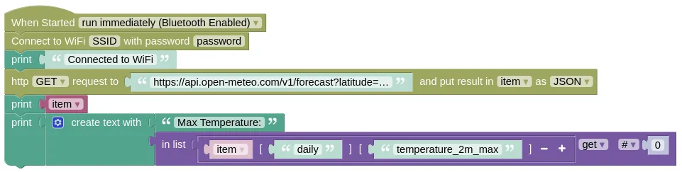

HTTP Requests (urequests)
This extension allows you to make http request (ie. retrieve webpages). You can use this to retrieve normal webpages, as well as useful data (eg. weather) from public APIs.
You can find a list of public APIs here https://github.com/public-apis/public-apis. Many more can be found if you dig around online.
You can also retrieve webpages (HTML), but be warned that some webpages may be very large, and your device may not have enough memory to load the entire page.
Code
This code will retrieve the maximum temperature in Singapore today from Open-Meteo.
It will display the full data returned by Open-Meteo, then extract out and print just the max temperature.
If you want to retrieve other weather data, you'll need to change the URL. Open this page, https://open-meteo.com/en/docs, change the settings, then get the new URL from the API URL section.
Blocks

You must put in your actual WiFi SSID and password in the Connect to WiFi block, or this will not work.
The above screenshot does not show the full URL, it should be https://api.open-meteo.com/v1/forecast?latitude=1.2897&longitude=103.8501&daily=temperature_2m_max&timezone=Asia%2FSingapore&forecast_days=1 (...in a single line).
Most web-based APIs will return JSON data. If your API isn't returning JSON, or if you are retrieving a webpage, then you'll need to set the format as Text.
Python
import network
import urequests
# Connect to WiFi
ioty_wifi = network.WLAN(network.STA_IF)
ioty_wifi.active(True)
ioty_wifi.connect('SSID', 'password') # Put in actual WiFi SSID/Password
while not ioty_wifi.isconnected():
pass # Do nothing until wifi is connected
print('Connected to WiFi')
try:
urequest = urequests.request('GET', 'https://api.open-meteo.com/v1/forecast?latitude=1.2897&longitude=103.8501&daily=temperature_2m_max&timezone=Asia%2FSingapore&forecast_days=1')
item = urequest.json() # JSON decode the response and put the result in "item"
urequest.close()
except: # If the request fails (eg. server down), it will throw an exception.
pass
print(item) # Print everything
print('Max Temperature:', item['daily']['temperature_2m_max'][0])
Results
A few seconds after reset, you should see "Connected to WiFi", which indicates that your device has successfully connected to your WiFi. If this does not appear, you'll need to troubleshoot your WiFi connection. Check that...
- WiFi SSID and Password are correct.
- WiFi SSID is for 2.4GHz and not 5GHz.
After connecting to WiFi, your device will retrieve data from Open-Meteo, and print it twice; the first will show all the data returned, while the second will only show the max temperature.
urequests - send and retrieve data via HTTP
Constructors
None.
Use the request function.
Functions
urequests.request(method, url, data=None, json=None, headers={}, auth=None, timeout=None, parse_headers=True)
Make a HTTP request.
The arguments are:
-
methodA string. Must be one of the following.-
GETThis is the most common type of HTTP request, and is used when retrieving data. Most APIs will use this. -
POSTThis type of request is used when making changes (eg. when sending a text message). -
HEAD,PUT,PATCH,DELETEThese are not commonly used.
-
-
urlA string specifying the URL to retrieve. -
dataA bytes object specifying the data to be sent to the server. Not used withGETrequests. -
jsonData to be sent to the server;requestwill convert it to JSON before sending it. -
headersA dictionary containing custom headers to be sent with the request. The key should be the header name and the content the header value. -
authA list containing username and password for HTTP Basic Access Authentication. -
timeoutA number specifying the duration to wait before timing out the HTTP request. -
parse_headersA boolean specifying whether to parse the response header.
Returns a Response object. See below for methods of the Response object.
Class
Response
The request function will return a Response object, which provides properties and methods to read the HTTP response data.
Properties
Response.content
A bytes object containing the HTTP response data.
Response.text
A string containing the HTTP response data decoded using UTF-8.
Methods
Response.close()
Close the response object.
Returns None.
Response.json()
JSON decodes the HTTP response data and returns the resulting object. This may throw an exception if the HTTP response data is not valid JSON.
Returns None.